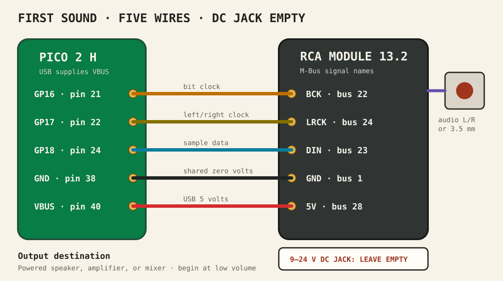

RCA Module 13.2 · lesson 0001
Hear three tones
Use a separate Pico 2 to send digital audio to the module’s PCM5102A DAC. The only goal is to hear 220, 440, and 880 Hz.
1. What the module does
The Pico cannot send a sound wave directly to this module. It sends a stream of numbers over I²S. The module’s PCM5102A converts those numbers into the analogue voltage that an amplifier can play.
Three I²S signals travel from the Pico:
- BCK — bit clock
- Marks the rhythm of the individual data bits.
- LRCK — left/right clock
- Marks whether the next sample belongs to the left or right channel. MicroPython calls this signal
ws. - DIN — data in
- Carries the sample numbers into the DAC. MicroPython calls the Pico’s output pin
sd.
Show answer
The PCM5102A. The Pico creates the sample numbers and transmits them digitally.
2. The DC jack is optional here
The module’s DC jack accepts 9–24 V and its converter makes 5 V. TinyTronics also specifies 5 V operation through the pin header, and M5Stack’s schematic shows that header on the module’s 5 V rail. For this small test, we will use the Pico’s VBUS pin, which exposes the approximately 5 V arriving through USB.
M5Stack describes the DC route more explicitly than the header-powered route. The header route is appropriate for this low-power audio test, but keeping the DC jack empty is essential: we do not want two supplies driving the same 5 V rail.
VBUS to module 5V. Connect their grounds too.
3V3 OUT to the module’s 5V pin. Do not attach a 9–24 V adapter while the module is receiving VBUS in this lesson.
3. Gather only these parts
- 1 × Pico 2 H
Preferably the separate test Pico. - 1 × RCA Module 13.2
M5Stack M125 with PCM5102A. - 5 × jumper wires
Use the ends that fit the Pico and M-Bus sockets. - 1 × USB data cable
For power and running MicroPython. - 1 × audio cable
3.5 mm or stereo RCA. - 1 × listening device
Powered speaker, amplifier, or mixer.
A breadboard can hold the Pico, but the RCA module does not need to sit on it. A passive speaker by itself is not enough; the module provides an audio signal, not loudspeaker power.
4. Wire with USB unplugged
- Unplug USB from the Pico. Leave the module’s DC jack empty.
- Connect Pico GP16, physical pin 21 to module BCK, M-Bus pin 22.
- Connect Pico GP17, physical pin 22 to module LRCK, M-Bus pin 24.
- Connect Pico GP18, physical pin 24 to module DIN, M-Bus pin 23.
- Connect Pico GND, physical pin 38 to module GND, M-Bus pin 1.
- Connect Pico VBUS, physical pin 40 to module 5V, M-Bus pin 28.
- Connect the white/red RCA outputs or 3.5 mm output to a powered speaker, amplifier, or mixer. Begin with its volume low.

VBUS → 5V and GND → GND. If the M-Bus labels or pin-1 orientation are not clear on your board, stop and send your teaching agent a well-lit photo instead of guessing.
5. Send three sine waves
Run this main.py. This audio lesson uses machine.I2S: picozero remains useful for LEDs, buttons, and pots, but it does not provide the digital-audio bus.
from array import array
from machine import I2S, Pin
from math import pi, sin
from time import sleep_ms
SAMPLE_RATE = 44_100
AMPLITUDE = 8_000
TONES_HZ = (220, 440, 880)
TONE_LENGTH_MS = 700
CHUNK_LENGTH_MS = 100
audio = I2S(
0,
sck=Pin(16), # GP16 -> BCK
ws=Pin(17), # GP17 -> LRCK
sd=Pin(18), # GP18 -> DIN
mode=I2S.TX,
bits=16,
format=I2S.STEREO,
rate=SAMPLE_RATE,
ibuf=20_000,
)
def make_tone(frequency_hz):
# Keep this buffer small enough for the Pico's RAM.
frame_count = SAMPLE_RATE * CHUNK_LENGTH_MS // 1_000
samples = array("h", [0] * (frame_count * 2))
for frame in range(frame_count):
angle = 2 * pi * frequency_hz * frame / SAMPLE_RATE
sample = int(AMPLITUDE * sin(angle))
samples[frame * 2] = sample
samples[frame * 2 + 1] = sample
return samples
try:
for frequency_hz in TONES_HZ:
print("Tone:", frequency_hz, "Hz")
tone = make_tone(frequency_hz)
# Reuse 100 ms of audio seven times instead of allocating
# one large 700 ms stereo buffer.
for _ in range(TONE_LENGTH_MS // CHUNK_LENGTH_MS):
audio.write(tone)
del tone
sleep_ms(300)
finally:
audio.deinit()Why the sample rate is 44,100 Hz
This is a three-wire I²S connection: BCK, LRCK, and DIN. The PCM5102A therefore builds its missing master clock from BCK using an internal PLL. That mode supports standard rates such as 32,000, 44,100, and 48,000 Hz. It does not support 22,050 Hz, which leaves this module silent.
Why every sample appears twice
samples[frame * 2] is left and samples[frame * 2 + 1] is right. Both receive the same number, so both audio sockets play the same test tone.
Why the tone is written in chunks
A complete 700 ms stereo tone at 44,100 Hz needs about 123 KB of contiguous RAM. That is too much to allocate reliably on the Pico. The code builds only 100 ms—about 18 KB—and writes that same chunk seven times.
Why the amplitude is 8,000
A signed 16-bit sample can approach 32,767. An amplitude of 8,000 is clearly audible while leaving plenty of headroom. Begin with the powered speaker volume low.
6. Test the whole chain
- Turn the powered speaker or amplifier volume down.
- Reconnect the Pico’s USB cable.
- Run
main.py. - Slowly raise the listening-device volume.
- Listen for three tones: low, middle, then high.
- Run it once through the left output and once through the right output if you use RCA cables.
ImportError mentions I2S
Your Pico firmware does not expose machine.I2S. Install a current official MicroPython build for the Pico 2, then try again.
The Shell prints tones but I hear silence
First check the listening device is amplified and uses an audio output, not the yellow video socket. Then unplug USB and recheck BCK, LRCK, DIN, and the shared ground. Finally confirm VBUS reaches the module’s 5V header connection.
I hear harsh digital noise
Stop the program and unplug USB. DIN and BCK may be exchanged, or LRCK may not reach GP17. Recheck by signal name rather than wire colour.
Only one RCA socket makes sound
The code sends the same sample to left and right. Swap the RCA cables at the module. If the silent side moves, troubleshoot the cable or listening-device input; if it stays on the same module socket, send your teaching agent the result.
Done means
- The module’s DC jack stayed empty.
- Pico VBUS powered the module’s 5V header input.
- BCK, LRCK, and DIN reached GP16, GP17, and GP18.
- You heard a low, middle, and high tone.
- Both left and right outputs were tested.
Tell your teaching agent: whether you heard all three tones, whether both channels worked, and what you connected to the audio output.